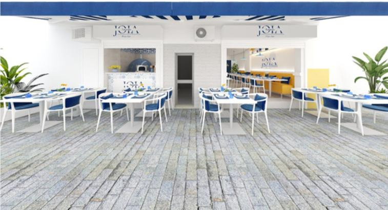
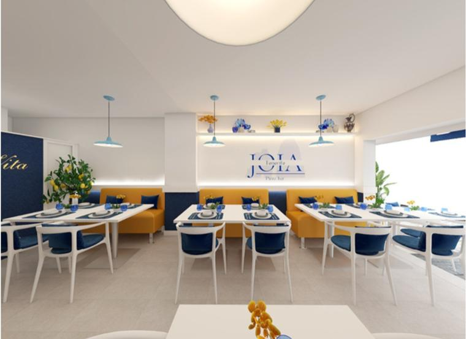
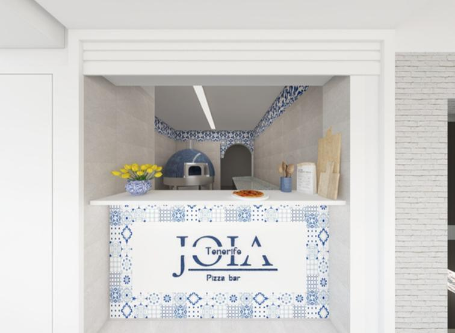

Cucina italiana
Pizza e ispirazioni della tradizione, al centro della visione gastronomica di JOIA.
Italian soul. Mediterranean spirit.
La cucina italiana, il piacere di stare insieme e quell'atmosfera che sa già di vacanza. Benvenuto nel mondo JOIA.
Entra nel progetto
01 — Il progetto
JOIA nasce da una visione di ospitalità che unisce la cucina italiana al fascino senza tempo di Capri. La pizza è al centro di un'esperienza fatta di gusto, cura degli spazi e convivialità.
Un'identità mediterranea che prende forma nei dettagli: il blu del mare, i toni chiari, l'accoglienza e il piacere di condividere la tavola.
Scopri l'atmosfera02 — Il mondo JOIA
Spazi e suggestioni dal progetto JOIA.
Un piccolo viaggio nella nostra identità.


Pizza e ispirazioni della tradizione, al centro della visione gastronomica di JOIA.
Un'atmosfera luminosa, tra dettagli blu e un'eleganza mediterranea spontanea.
La tavola come punto d'incontro, dove il cibo diventa un'esperienza da condividere.
03 — Cresci con noi
Cerchiamo imprenditori e professionisti che condividano la visione JOIA e vogliano investire nel suo sviluppo.
Capitale e partecipazione al progetto, con la gestione operativa quotidiana affidata al team JOIA. Quote e condizioni da definire insieme.
Diventa partnerIniziamo da una conversazione
Per conoscere JOIA o parlare di una possibile collaborazione, scrivici.
info@joia-pizzeria.com